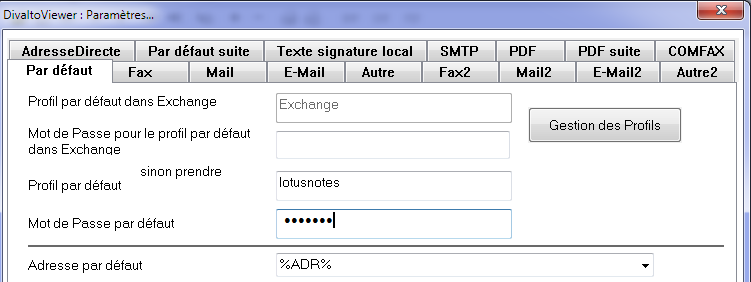
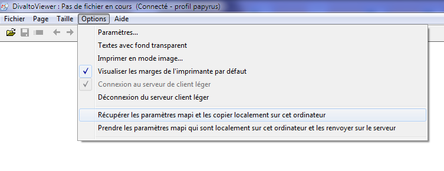

Vous pouvez utiliser le client Lotus Notes sur une poste client léger distant à condition d'installer le connecteur Harmony pour Lotus Notes sur ce poste.
A la fin de l’installation, lancez DivaltoViewer sur le client léger :
Dans le menu Options:Paramètres..., onglet Par défaut suite, cochez la case "Utiliser Lotus Notes pour l'envoi de mail et le CRM".
Dans l’onglet Par défaut, saisissez un nom de profil (par exemple "lotusnotes") et surtout le mot de passe qui servira à la connexion au client Lotus Notes :

Pour enregistrer les paramètres dans la base de registre locale au poste client léger pour le compte de l'utilisateur courant, vous devez ensuite lancer le choix Options:Récupérer les paramètres mapi et les copier localement sur cet ordinateur :

Lancez Lotus Notes et procédez ensuite à l’installation classique des boutons dans les masques d'écran.
Créez un profil de connexion pour le client léger et renseignez-le dans Lotus Notes.
Attention : Vous devez aussi, dans le menu du CRM, lancer les choix d'ajout des boutons pour Outlook (afin d'inscrire le lien vers les programmes Diva dans la base de registre) et faire l'identification Outlook.